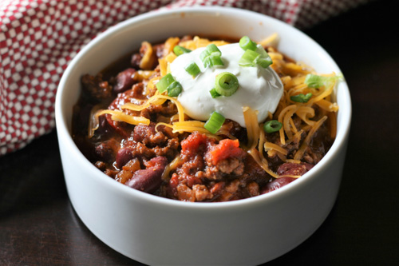

It's Chili by Kyle!!

This recipe makes a delicious bowl of chili!
It's Chili by Kyle makes an amazing tasting chili with very little effort.
It can be either made on the stove or in a slow cooker.
Ingredients:
- 2 pounds lean ground beef
- 1 large can diced tomatoes
- 1 large can tomato sauce
- 1 can of 6 bean blend, drained and rinsed
- 1 carrot
- 1 can of corn nibblets
- 1 ½ cups chopped onion
- ¼ cup chopped green bell pepper
- ¼ cup chopped red bell pepper
- ¼ cup chopped yellow/orange bell pepper
- ⅛ teaspoon ground cayenne pepper
- ½ teaspoon white sugar
- ½ teaspoon dried oregano
- ½ teaspoon ground black pepper
- 1 teaspoon salt
- 1 ½ teaspoons ground cumin
- ¼ cup chili powder
Directions:
- Place ground beef in a large, deep skillet. Cook over medium-high heat until
evenly brown. Drain, and crumble.
- In a large pot over high heat combine the ground beef, diced tomatoes, tomato
sauce, bean mix, onions, bell peppers, carrots, corn nibblets, cayenne pepper, sugar,
oregano, ground black pepper, salt, cumin and chili powder. Bring to a boil, then
reduce heat to low. Simmer for 1 1/2 hours. (Note: If using a slow cooker, set on
low, add ingredients, and cook for 8 to 10 hours.)